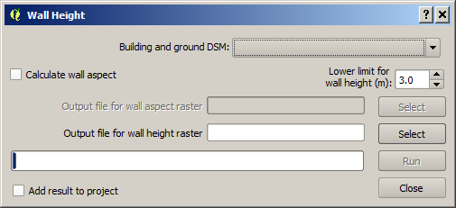
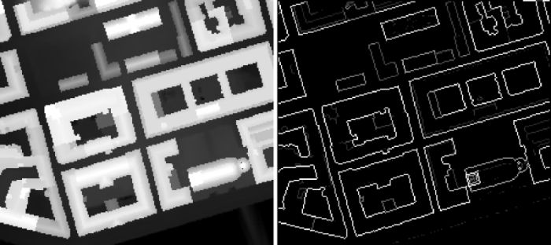

The Wall height and aspect plugin can be used to identify wall pixels and
their height using ground and building digital surface models (DSM) by using a
filter as presented by Lindberg et al. (2015a). Optionally, wall aspect can also
be estimated using a specific linear filter as presented by Goodwin et al.
(1999) and further developed by Lindberg et al. (2015b) to obtain the wall
aspect. Wall aspect is given in degrees where a north facing wall pixel has a
value of zero. The output of this plugin is used in other UMEP plugins such as
SEBE (Solar Energy on Building Envelopes) and height to width ratio.
The Sky View Factor Calculator is located at
UMEP -> Pre-Processor -> Urban Geometry -> Wall Height and Aspect.
When you run plugin, you will see the dialog shown below.

A DSM (geoTIFF) consisting of ground and building heights.
Tick this box if you want to include estimation and output of a wall
aspect grid. This calculation is computational intensive and will make your
computer work for a while (depending on the size of the input DSM).
This limit gives the lowest height of a building wall.
Name of the output file of the aspect raster.
Name of the output file of the aspect raster.
This starts the calculations.
If this is ticked in, the raster(s) will be added to the map canvas.
This button closes the plugin.
Two different files (geoTIFF) will be saved if also wall aspect is
calculated.
The figure below shows an example of input data (left) and the resulting
wall height raster (right).

- Wall pixels will be located ‘inside’ of the building footprint
- The aspect algorithm gives reasonable result but improvements could be
made by e.g. using a vector line layer which could be used to populate the wall
pixels with aspect values.
Goodwin NR, Coops NC, Tooke TR, Christen A, Voogt JA (2009)
Characterizing urban surface cover and structure with airborne lidar technology.
Can J Remote Sens 35:297–309 (link
to paper)
Lindberg, F., Jonsson, P. & Honjo, T. and Wästberg, D. (2015) Solar
energy on building envelopes - 3D modelling in a 2D environment. Solar Energy.
115 (2015) 369–378 (link
to paper)
Lindberg, F., Grimmond, C.S.B. and Martilli, A. (2015) Sunlit fractions
on urban facets - Impact of spatial resolution and approach. Urban Climate. DOI
10.1016/j.uclim.2014.11.006 (link
to paper)